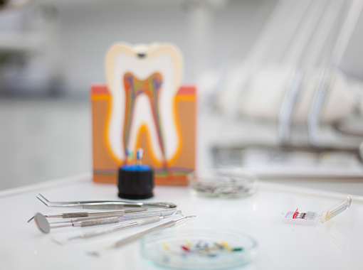
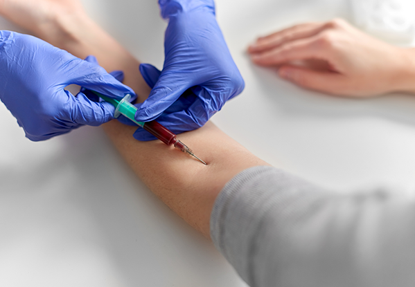
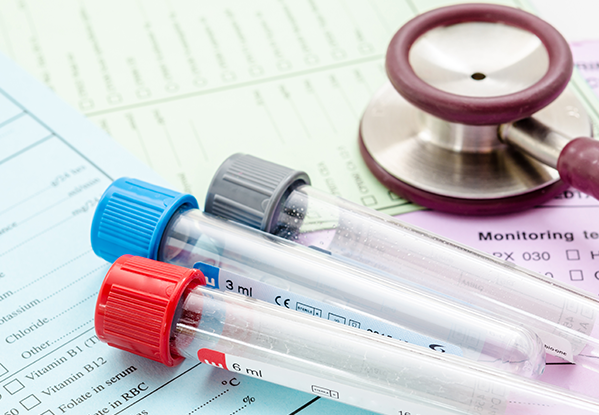
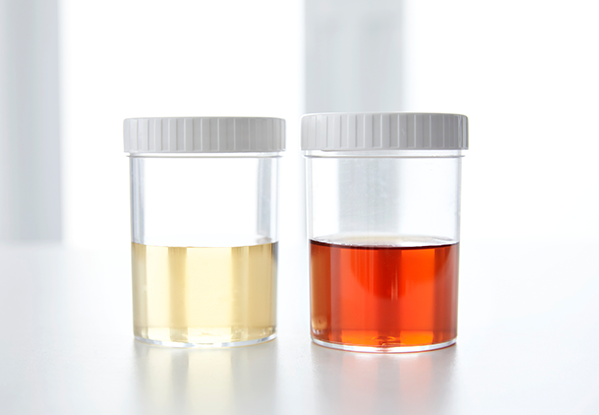
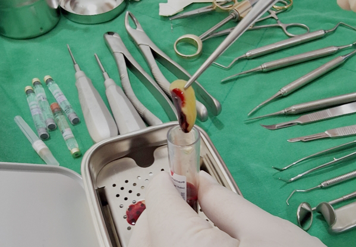
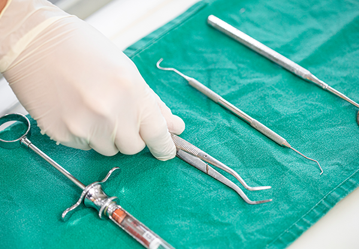
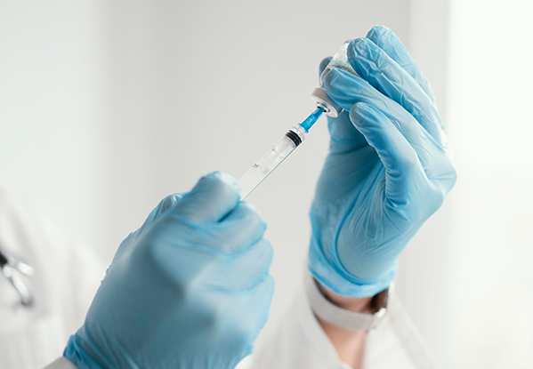

채혈
환자의 팔에서 약 10ml 정도의
소량의 혈액을 채취합니다.
자신의 혈액에서 추출한 성장인자를 활용해
출혈과 통증을 줄이고 회복을 돕습니다
<%=m_client_en%>
자신의 혈액 속 고농축 성장인자를 활용하는
PRF(Platelet Rich Fibrin)란 환자의 혈액에서 혈소판과 백혈구를 추출하여
단백질 성분의 고농축 성장인자를 얻어내는 시술입니다.
다른 생화학적 물질의 첨가 없이 순수하게 자가 혈액에서 고속 원심분리를 통한 추출물로
거부반응과 부작용이 거의 없는 안전한 치료방법입니다.
성장인자가 고농축 된 PRF를 사용하면 뼈이식이나 임플란트 수술 후 재생에 필요한 단백질을 지속적으로 배출하여 회복 기간을 단축시켜줍니다.


환자의 팔에서 약 10ml 정도의
소량의 혈액을 채취합니다.

환자에게 필요한 PRF의 종류
(A-PRF/i-PRF)에 맞게 구분합니다.

Dr.Choukroun의 프로토콜에 따라
고속 원심분리 하여 고농축 PRF를 분리합니다.

채취한 A-PRF는 환부에 맞게
자르거나 납작한 형태로 성형하여 사용합니다.

액상의 i-PRF는 주사기를 이용해
골이식재와 혼합 후 사용하여 골형성을 촉진시켜 줍니다.

수술 후 봉합 시 잇몸에 PRF를
환부에 적용하여 치유를 촉진하고 통증을 줄여줍니다.
임플란트를 건강하고 오래 사용하기 위해서는
티타늄 임플란트 인공치근과 잇몸뼈가 단단히 붙는 것이 중요합니다.
일반적으로 당뇨, 골다공증을 앓고 있는 환자 또는
치유와 회복력이 떨어지는 노년층에게서 잇몸뼈와 임플란트의
단단한 결합능력이 떨어지는 경우가 있습니다.
이때 자가혈(PRF) 임플란트를 이용하면
임플란트와 잇몸뼈가 단단히 붙을 수 있습니다.
제로치과병원에서는 기존 마취와는 다르게 불안과 두려움을 줄이기 위해
가수면 상태에서 의식을 보존하는 요법인 의식하진정요법을 사용하고 있습니다.
편안하고 진정된 상태로 진행되어 치료 과정을 기억하지 못해
심리적인 스트레스를 줄일 수 있습니다.